Einrichtung
Autostart in Kurzbefehle einrichten
Lege zuerst einen eigenen Kurzbefehl mit der AirPulse-Aktion „Start Pulse Tracking“ an. Danach erstellst du eine persönliche Bluetooth-Automation, die diesen Kurzbefehl beim Verbinden deiner AirPods Pro 3 ausführt.
Die Screenshots zeigen die englische iOS-Oberfläche. Die jeweils benötigte Schaltfläche ist rot markiert.
Teil 1
Kurzbefehl für AirPulse anlegen
Erstelle in der App Kurzbefehle einen neuen Kurzbefehl und füge die AirPulse-Aktion „Start Pulse Tracking“ hinzu.
-
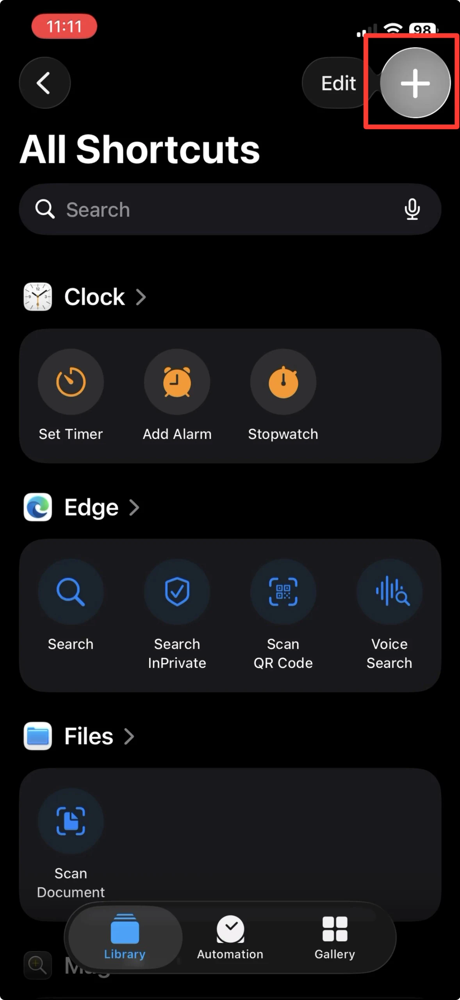
Schritt 1 Tippe auf +, um einen neuen Kurzbefehl zu erstellen -
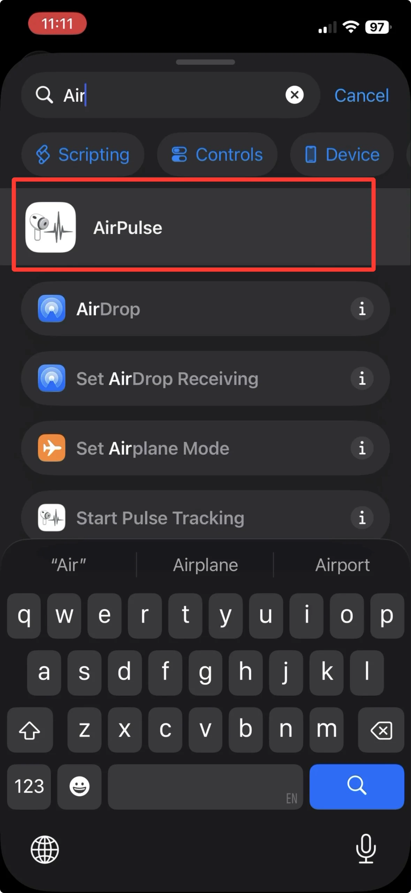
Schritt 2 Suche nach „AirPulse“ -
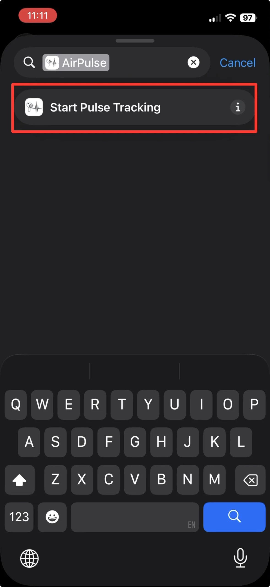
Schritt 3 Wähle „Start Pulse Tracking“ aus -
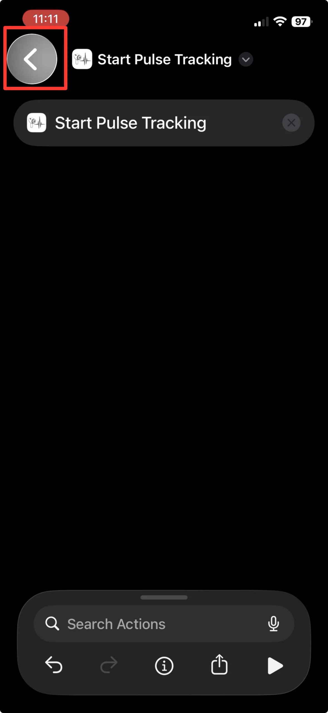
Schritt 4 Tippe auf den Zurück-Pfeil, um den Kurzbefehl zu schließen
Teil 2
Persönliche Bluetooth-Automation erstellen
Wähle deine AirPods Pro 3 als Bluetooth-Auslöser, stelle die Automation auf „Run Immediately“ und weise ihr den gerade erstellten Kurzbefehl zu.
Automation anlegen
-
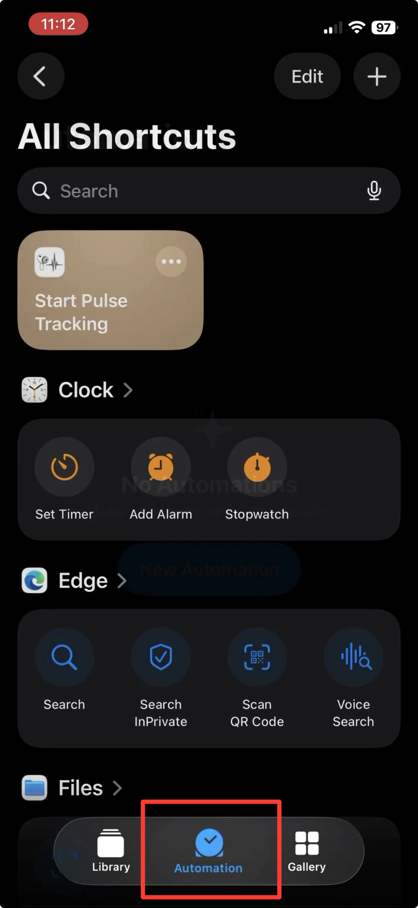
Schritt 5 Wechsle zum Tab „Automation“ -
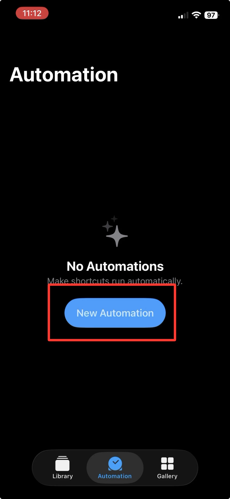
Schritt 6 Tippe auf „New Automation“ -
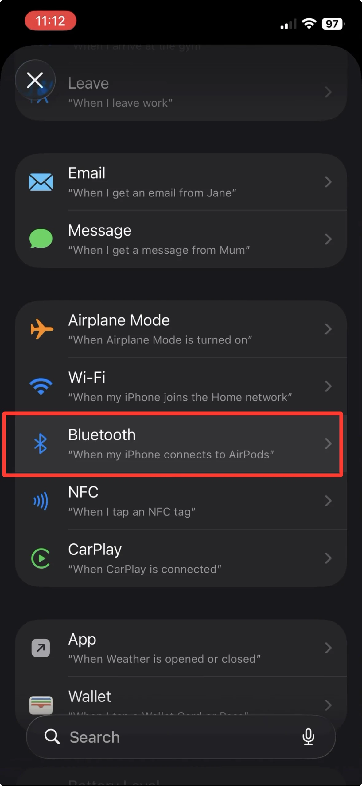
Schritt 7 Wähle „Bluetooth“ aus der Liste
AirPods auswählen und sofort ausführen
-
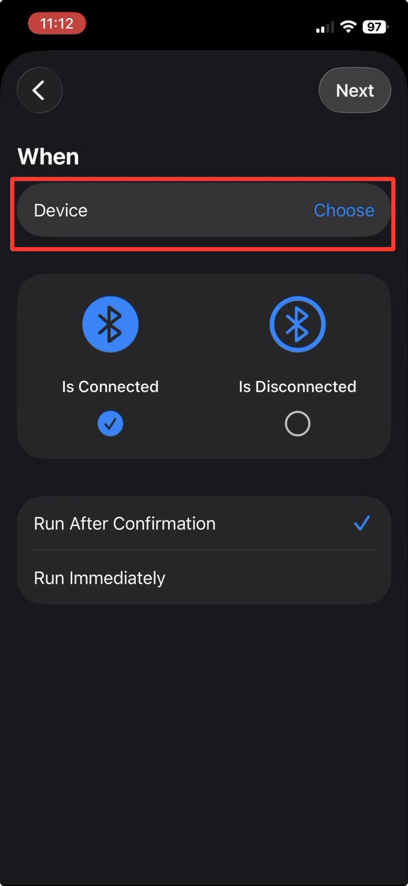
Schritt 8 Tippe auf „Device“ -
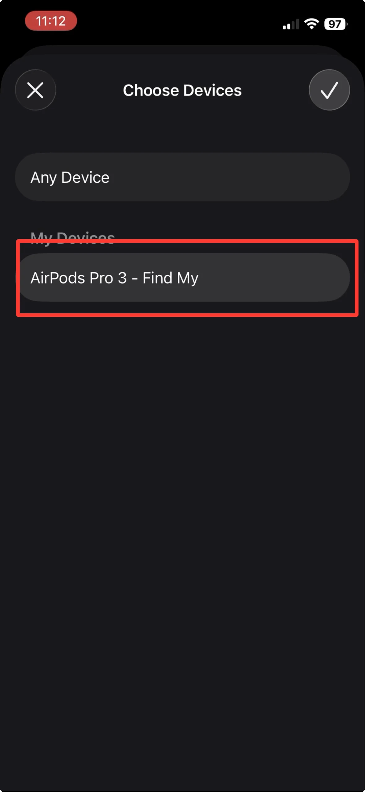
Schritt 9 Wähle deine AirPods Pro 3 aus der Liste aus -
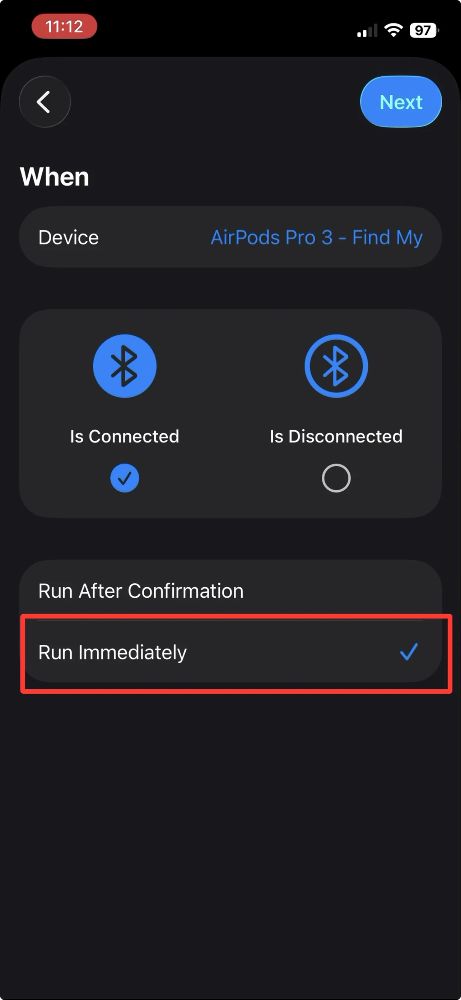
Schritt 10 Wähle „Run Immediately“ aus, damit die Automation sofort starten darf -
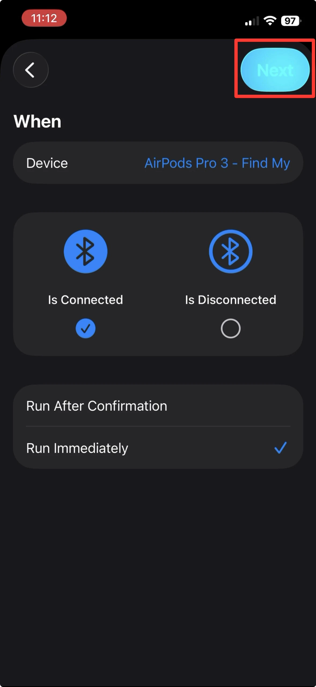
Schritt 11 Tippe auf „Next“
AirPulse-Kurzbefehl zuweisen
-
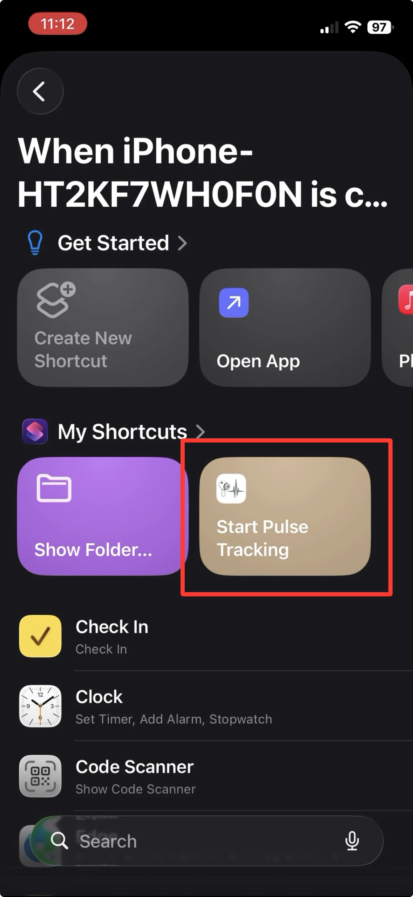
Schritt 12 Wähle den zuvor erstellten Kurzbefehl aus